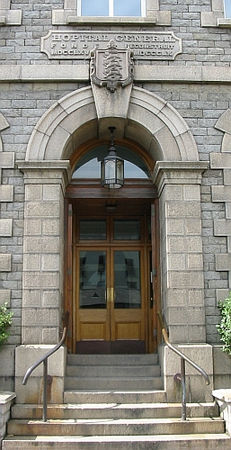

Merrienne écrit.

Moussieu l'Editeu,
Comme sans doute ous avez ouî, man pouôre bouonhomme a tait à l'hôpita pour un tchinzejours.
Grand doux, tchi minsèthe! Pour vos dithe, y n'avait pas tait bein pour un mais ou d'mème, et une séthée y s'mînt à pâslé des shows et d'une bouonne vaque que nou y'avait dit tch'y vêrrait à Saint-Louothains. Mé, sachant tch'y n'tait pas en santé, je v'nais d'l'y dithe que je n'me fichais pas mal si y'avait une bouonne vaque à Saint-Louothains, un bouon boeu à Saint-Martin, ou une bouonne g'niche r'nouv'lée ès Trais Pâraisses, j'prendrais bouon soin tch'y n'îthait pas, quand j'éthais à l'amathé au pid d'la tablye. Y voulait raipondre, mais tout-d'un-coup, le v'là tch'y tchait tout san long sûs l'plianchais, sans connaissance.
Moussieu, j'en ai veu et fait d'pûs d'une sorte dans l'couothant d'ma longue vie, mais dans chu moment-là j'fut prinse d'une affreuse peux, de tchi qu'j'eut bein d'la peine à me l'vé, pour v'nin au s'cours de man pouôre bounhomme. Y n'savait pas ouèsqu'il tait, et n'pouvait pas bouogi, et j'vos asseuthe, Moussieu, que je n'tait pas trop seuze à chu têrribl'ye instant tch'y tait ocquo en vie.
Quand j'eut r'print mes sens un mio je téléfoni pour le docteu et bétôt ne v'là man Ph'lip transporté à l'hopita. J'fut ôv l'y et je l'vit porté à haut, d's'habillyi et mint au liet, mais y 'tait ocquo sans connaissance et j'm'en r'vint siez nous bein triste, car j'savais bein que ch'tait une chance si je r'vêrrais man Ph'lip en vie. Chaque jour tandis tch'y fut là j'fut l'vais, et bétôt j'eut la jouaie d'vais tch'y qu'menchait à se r'faithe p'tit-à-p'tit. Et Vendredi passé, y r'vint siez-l'y dans l'ambulance, pas trop raide acquo par un biau but, et n'pouvait à peine se t'nin d'but, mais au mains j'tais là à l'soigni, et après tchiques jours, ayant r'print un mio d'forche, y pouvait s't'nin d'but, et, avec l'aide d'un bâton d'un bord et mé d'l'autre, marchi jusqu'à la f'nètre et vais l'gardin. J'l'y dêfouit tchiques patates de sa bordeuse, et il en a ach'teu trais fais par jour, tchique fais bouoillies, tchiquefais fricachies, et y maintchein tch'y n'a jamais gouôté miyeu. Et ach'teu, Moussieu, Ph'lip voudrait vos êcrithe tchiques mots au sujet de ses expéthiences à l'hôpita. J'y'ai dit tch'y f'thait mûs de s'taithe, mais sa maladie l'a laissi aussi têtu que comme jamais, ch'est entchi tch'il aille.
Ph'lip écrit.
Moussieu l'Editeu,
La bouonnefemme m'a donné en avis de n'dithe rain de chein tchi m'arrivit à l'hopita, mais, Moussieu, ch'est pûs que j'ne peux faithe et si y'a des gens tch'y n'aim'thont pas chein que j'm'en vais dithe, je n'les forche pas à en craithe un mot. Y f'thont comme y voudront!
A qu'menchi, j'vos dithai, franchement que pûstot que d'être rapporté à l'hopita général, j'îthais, et bein content, me r'pôsé avec mes anchêtres dans l'chimtièthe de Saint-Ou. Il est vrai que tout probablyement j'sauvit ma vie en allant à l'hopita, mais avec chonna je s'y seux et sertain que si j'avais yeu à y resté même deux jours de pûs, j'n'éthais pas survêtchu. ach'teu que me r'v'la dans man liet, avec ma Merrienne à m'soigni, tout est différent.
Ch'n'est pas que je n'fut pas bein soigni à l'hôpita; ch'n'est pas qu'les noces ne faisaient pas lûs d'vé, mais pour un homme assez indépendent comme mé, ch'est tout une affaithe de routine. Nou n'a autchune chance de faithe comme nou voudrait, nous est qu'mandé du matin jusqu'au sé. Nous est rêvillyis dans les chinq heuthes, et sale ou pas, nous est lavez et frottés et touôné d'un bord et d'l'autre, à toutes les heuthes du jour. Sans doute ch'est partie du système, et y faut admettre que les jeunes hardelles tch'y vos soignent travaillent du et font d'lûs mûs, mais y n'y'a personne avec tch'y nou peut conversé et de niet ch'est le silence de la tombe. Paslant des noces, Moussieu, y'en avait trais ou quatre que, si j'avais yeu vingt ans j'éthais bein voulu prom'né dans les ruéttes ou sé, mais n'allez pas l'dithe à la Merrienne, j'vos en prie.
Quant à chein qu'nous avait à mangi, nous n'pouvait pas s'pliaindre, à chein que l's'autres disaient, mais mé j'n'avais autchun appétit, et si j'trouvais qu'la soupe n'avait autchun goût et que l'paison gouôtait comme une vieille charrette tch'avait tait bouoillie pour un couplye d'années, ch'tait sans doute ma faute, et je n'bliaume pas l'tchuisigni; y faisait d'san mûs, le pouôre balloque, avec les matéthiaux qu'nou l'y donnait. Mais, Moussieu, je n'voudrais pas avé à péyi pour le tais tch'est consommé à l'hopita car, à toutes les heuthes du jour y'en avait une tâsse aupi d'man liet, de tchi que même ach'teu j'aim'thais mûs une bouonne bouteille de bièthe que tout l'tais tch'est cru en Chine ou dans l's'Indes. Sans doute, le goût r'veindra, car l'Merrienne, tch'en bé au mains une doûzaine de tâsses dans sa matinée, sans pâslé de chein tchi l'y d'valle ava la gorge pûs tard, insiste que n'y'a rein comme le tais pour rafraichi le tchoeu d'un homme.
Ach'teu, Moussieu, me v'la fini pour chutte fais, mais ch'tait vrai, après tout que y'avait une bouonne vaque à Saint-Louothains et j'en félicite le jeune Le Cornu, et la Merrienne étout. Ch'ein qu'ch'est, ou dit d'avé des pathens.
A bétôt, et, j'vos en prie, v'nez m'vais au pûs tôt, car j'm'engnie à man tout seu.
Ph'lip
16/5/1959
Viyiz étout: